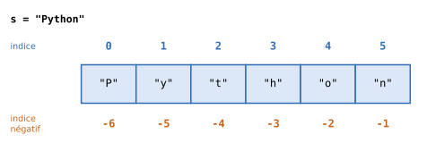

6. Les chaînes de caractères#
Objectifs du chapitre
À la fin de ce chapitre, vous saurez :
manipuler une chaîne de caractères comme une liste de caractères (indices, sous-chaînes, parcours) ;
convertir des chaînes en nombres et inversement ;
utiliser les principales méthodes des chaînes (
split,lower,replace,strip…) ;mettre en forme des affichages avec
formatet les f-strings.
Prérequis : chapitres 1 à 5. Durée indicative : 1h30.
Nous nous intéressons maintenant plus en détail à un type de données que nous utilisons depuis le début : les chaînes de caractères (type str).
Pour créer une chaîne de caractères, il suffit d’utiliser des guillemets, simples ou doubles (les deux sont équivalents) :
s1 = "abc"
s2 = 'bde'
s3 = "L'apostrophe passe sans problème entre guillemets doubles"
print(s3)
L'apostrophe passe sans problème entre guillemets doubles
Comme pour les listes, il est conseillé de se reporter à la documentation en ligne lorsque vous avez des doutes sur la manipulation des chaînes de caractères.
6.1. Conversion d’une chaîne en nombre#
Si une chaîne de caractères représente une valeur numérique (comme la chaîne "10.2"), on peut la transformer en entier ou en nombre à virgule pour l’utiliser ensuite dans des calculs, avec les fonctions de conversion int et float.
C’est indispensable lorsque les données proviennent d’un fichier ou d’une saisie de l’utilisateur, qui sont toujours lues sous forme de texte.
s = "10.2"
f = float(s)
print(f + 2)
print(f == s) # un nombre n'est jamais égal à une chaîne
12.2
False
s = "10"
i = int(s)
print(i - 1)
print(s * 2) # attention : sur une chaîne, * répète !
9
1010
6.2. Analogie avec les listes#
Une chaîne de caractères se manipule en partie comme une liste de caractères.
On peut ainsi obtenir sa longueur avec len, ou accéder à son \(i\)-ème caractère avec la notation s[i], y compris avec des indices négatifs :


Fig. 6.1 Les indices des caractères de la chaîne "Python".#
s = "Python"
print(len(s))
print(s[0])
print(s[-1])
6
P
n
De même, on peut extraire des sous-chaînes à partir des indices de début et de fin (exclu) :
print(s[2:4])
print(s[:2])
th
Py
On peut aussi parcourir une chaîne caractère par caractère avec une boucle for :
for lettre in "abc":
print(lettre)
a
b
c
Comme pour les listes, on peut concaténer deux chaînes avec l’opérateur + et répéter une chaîne avec l’opérateur * :
s = "ab" + ("cde" * 3)
print(s)
abcdecdecde
Enfin, le mot-clé in permet de tester la présence d’une sous-chaîne dans une chaîne :
s = "abcde"
print("a" in s)
print("bcd" in s)
print("bCd" in s)
True
True
False
À retenir : les chaînes ne sont pas modifiables
L’analogie entre listes et chaînes de caractères n’est pas parfaite.
En particulier, on peut lire le \(i\)-ème caractère d’une chaîne, mais pas le modifier : si s est une chaîne de caractères, l’instruction s[2] = "c" provoque une erreur.
On dit que les chaînes sont non modifiables (ou immuables).
Pour « modifier » une chaîne, on en construit une nouvelle, que l’on peut ranger dans la même variable :
s = "maison"
s[0] = "r"
---------------------------------------------------------------------------
TypeError Traceback (most recent call last)
Cell In[9], line 2
1 s = "maison"
----> 2 s[0] = "r"
TypeError: 'str' object does not support item assignment
s = "maison"
s = "r" + s[1:] # on construit une nouvelle chaîne
print(s)
raison
Testez-vous
Avec mot = "bonjour", que valent : mot[3], mot[-2], mot[1:4], len(mot), mot[0] + mot[-1] et "jour" in mot ?
Réponse
mot[3]vaut"j";mot[-2]vaut"u";mot[1:4]vaut"onj";len(mot)vaut7;mot[0] + mot[-1]vaut"br";"jour" in motvautTrue.
6.2.1. Construire une chaîne petit à petit#
De la même façon que l’on construit une liste avec append, on peut construire une chaîne en partant d’une chaîne vide "" et en lui ajoutant des morceaux au fil d’une boucle :
mot = "python"
resultat = ""
for lettre in mot:
resultat = resultat + lettre + "-"
print(resultat)
p-y-t-h-o-n-
6.3. Principales méthodes des chaînes#
Les chaînes disposent de nombreuses méthodes (des fonctions propres au type str, appelées avec la syntaxe chaine.methode(...)).
Comme les chaînes ne sont pas modifiables, ces méthodes ne modifient jamais la chaîne d’origine : elles retournent une nouvelle valeur.
Méthode |
Description |
|---|---|
|
retourne la version en minuscules de |
|
retourne la version en majuscules de |
|
retourne |
|
retourne une copie de |
|
retourne la liste des morceaux de |
|
l’inverse de |
|
retourne le nombre d’occurrences de |
|
retourne l’indice de la première occurrence de |
|
retourne l’indice de la dernière occurrence de |
|
retourne |
|
retourne |
|
retourne |
|
retourne |
|
remplace les |
Voici quelques exemples :
ch = " La vie est belle "
print(ch.strip())
print(ch.upper())
print(ch.replace("belle", "longue"))
print(ch.count("e"))
La vie est belle
LA VIE EST BELLE
La vie est longue
4
La méthode split est particulièrement utile pour découper un texte en mots, ou une ligne de données en champs :
phrase = "la vie est belle"
mots = phrase.split()
print(mots)
print(len(mots), "mots")
ligne = "Lemarchand;John;23"
print(ligne.split(";"))
['la', 'vie', 'est', 'belle']
4 mots
['Lemarchand', 'John', '23']
et join fait l’opération inverse :
print("-".join(["2024", "09", "01"]))
print(" ".join(mots).upper())
2024-09-01
LA VIE EST BELLE
Erreur fréquente
Les méthodes des chaînes retournent un résultat : elles ne modifient pas la chaîne. Le code suivant n’a donc aucun effet visible :
nom = "aude"
nom.upper()
print(nom) # affiche toujours "aude"
Il faut récupérer le résultat : nom = nom.upper().
Testez-vous
Que valent les expressions suivantes ?
"Bonjour".lower().count("o")"a,b,,c".split(",")"Rennes".replace("n", "N")" x ".strip() + "!""".join(["a", "b", "c"])
Réponse
2(on peut enchaîner les méthodes :"bonjour".count("o")) ;['a', 'b', '', 'c'](une chaîne vide apparaît entre les deux virgules consécutives) ;"ReNNes";"x!";"abc".
6.4. Mettre en forme des chaînes de caractères#
Nous avons vu au chapitre 1 deux façons d’insérer des valeurs de variables dans une chaîne : la méthode format et les f-strings.
Revenons-y plus en détail.
6.4.1. La méthode format#
La méthode format recherche dans la chaîne les accolades {} et les remplace, dans l’ordre, par les valeurs fournies :
age = 12
prenom = "Micheline"
s = "{} a {} ans".format(prenom, age)
print(s)
Micheline a 12 ans
On peut aussi nommer les emplacements, ce qui est utile pour les chaînes longues contenant de nombreuses valeurs, et préciser le format d’affichage après un : (ici, 3 chiffres après la virgule) :
s = "{prenom} a {age:.3f} ans".format(prenom="Micheline", age=12)
print(s)
Micheline a 12.000 ans
6.4.2. Les f-strings#
Les f-strings (pour formatted strings) sont une écriture plus concise du même principe : on place un f avant la chaîne et on écrit directement les variables, ou même des calculs, entre accolades :
age_chat = 12
s = f"Ce chat a {age_chat} ans, ce qui lui fait {age_chat * 6} ans en âge équivalent humain"
print(s)
Ce chat a 12 ans, ce qui lui fait 72 ans en âge équivalent humain
6.4.3. Les options de mise en forme#
Que ce soit avec format ou avec une f-string, on peut ajouter après le nom de la variable un : suivi d’options de mise en forme, par exemple pour fixer le nombre de décimales ou aligner des valeurs en colonnes :
Option |
Effet |
Exemple |
Résultat |
|---|---|---|---|
|
2 décimales |
|
|
|
2 décimales, largeur 8 |
|
|
|
entier, largeur 5 |
|
|
|
aligné à gauche, largeur 6 |
|
|
|
aligné à droite, largeur 6 |
|
|
|
centré, largeur 6 |
|
|
Vous trouverez une présentation exhaustive de ces options dans la documentation Python.
6.5. Exercices#
Exercice 6.1 : Compter les voyelles ★
Écrivez une fonction nb_voyelles(s) qui retourne le nombre de voyelles (a, e, i, o, u, y, en minuscules ou majuscules) contenues dans la chaîne s.
Indice
Parcourez la chaîne lettre par lettre, et testez si chaque lettre (mise en minuscule) est in "aeiouy".
Solution
def nb_voyelles(s):
compteur = 0
for lettre in s.lower():
if lettre in "aeiouy":
compteur += 1
return compteur
print(nb_voyelles("Bonjour Aude"))
Exercice 6.2 : Mots commençant par un préfixe ★
Écrivez une fonction qui prend en argument deux chaînes de caractères s et prefix et retourne le nombre de mots de la chaîne s qui débutent par la chaîne prefix.
Solution
def compte_prefix(s, prefix):
compteur = 0
for mot in s.split():
if mot.startswith(prefix):
compteur += 1
return compteur
print(compte_prefix("la vie est belle au bord du lac", "la"))
Exercice 6.3 : Compter un mot sans tenir compte de la casse ★★
Écrivez une fonction qui prend en argument deux chaînes de caractères s et mot_cible et retourne le nombre d’occurrences du mot mot_cible dans la chaîne s, sans tenir compte de la casse (majuscules / minuscules).
Attention : on compte des mots entiers, "la" ne doit pas être compté dans "lac".
Solution
def compte_sans_casse(s, mot_cible):
compteur = 0
mot_cible_minuscules = mot_cible.lower()
for mot in s.split():
if mot.lower() == mot_cible_minuscules:
compteur += 1
return compteur
print(compte_sans_casse("La vie est LA aussi, au bord du lac", "la"))
Remarquez que s.count("la") ne conviendrait pas : cette méthode compte les sous-chaînes, et trouverait donc aussi le « la » de « lac ».
Exercice 6.4 : Acronyme ★★
Écrivez une fonction acronyme(s) qui retourne l’acronyme d’une expression, formé des premières lettres de chaque mot, en majuscules.
Solution
def acronyme(s):
resultat = ""
for mot in s.split():
resultat += mot[0]
return resultat.upper()
print(acronyme("mathématiques et informatique appliquées aux sciences humaines et sociales"))
(Dans la vraie vie, l’acronyme MIASHS ignore les petits mots comme « et » et « aux » : sauriez-vous modifier la fonction pour ignorer les mots de 3 lettres ou moins ?)
Exercice 6.5 : Palindrome ★★
Un palindrome est un mot qui se lit de la même façon dans les deux sens, comme « radar » ou « kayak ».
Écrivez une fonction est_palindrome(mot) qui retourne True si mot est un palindrome.
En bonus, faites en sorte que la fonction ignore les espaces et la casse, pour reconnaître des phrases comme « Esope reste ici et se repose ».
Indice
Comparez mot[i] et mot[len(mot) - 1 - i] pour tous les i jusqu’au milieu du mot.
Ou bien construisez le mot à l’envers (voir l’exercice 5.3) et comparez-le au mot d’origine.
Pour le bonus, commencez par « nettoyer » la phrase avec lower et replace.
Solution
def est_palindrome(mot):
n = len(mot)
for i in range(n // 2):
if mot[i] != mot[n - 1 - i]:
return False
return True
def est_palindrome_phrase(phrase):
nettoyee = phrase.lower().replace(" ", "")
return est_palindrome(nettoyee)
print(est_palindrome("radar"))
print(est_palindrome("python"))
print(est_palindrome_phrase("Esope reste ici et se repose"))
6.6. Bilan du chapitre#
À retenir
Une chaîne se manipule comme une liste de caractères non modifiable :
len(s),s[i],s[debut:fin],for lettre in s,sous_chaine in s.int(s),float(s)convertissent une chaîne en nombre ;str(x)convertit en chaîne.Méthodes utiles :
lower,upper,strip,replace,split,join,count,find,startswith,endswith. Elles retournent une nouvelle valeur.Mise en forme :
f"{x:.2f}"(2 décimales).
Faites le point : êtes-vous capable de…
extraire un caractère ou une sous-chaîne d’une chaîne ?
parcourir une chaîne lettre par lettre, ou mot par mot avec
split?construire une nouvelle chaîne au fil d’une boucle ?
expliquer pourquoi
s.upper()seul ne modifie pass?afficher un nombre avec un nombre fixé de décimales ?